The last module used ggplot2 to make quick plots that helped us see the data. This module builds on that toward plots that ease our own interpretation or communicate clearly to someone else. We stay with the same ggplot2 package, but we add more of its functions to map several variables at once, layer geoms, add trend lines and reference lines, split a plot into small panels, control color and axes, and labeling everything so a reader can understand the plot without us standing next to them.
Resources
What is presented in this module is a small slice of a very robust visualization package. A quick view of some of the types of visuals that can be created can be found at the R Graph Gallery https://r-graph-gallery.com/. Deeper exploration can be found in the book by Wickham https://r4ds.hadley.nz/. Definitive documentation of all of ggplot2’s capabilities is located here https://ggplot2.tidyverse.org/.
ggplot2 extended
Every ggplot is built from layers and they can be added one at a time. In the last module we used the first few. Here is the fuller set, roughly in the order you may tend to add them. Importantly, every layer is not needed for every plot. A quick look might use only data, aesthetics, and a geom. A finished plot for a report can use more of them.
The plots below are built from real data so you can run them yourself as you read. To follow along, load the tidyverse and the IPEDS package, then assign the admissions data to an object. If you have not installed these packages yet, install them once with install.packages().
# Load the packages (install first if needed)library(tidyverse)library(IPEDS)# Assign the admissions data to work withadmissions<-adm2020
Building with + and |>
By now you have used two operators that both chain steps together, and it is worth being clear about when each one applies. Mixing them up is a common early error.
The pipe |> moves data from one dplyr verb to the next. It reads as “and then”. Example: “Take the data, and then filter, and then summarize”.
The plus + adds a layer to a ggplot. It reads as “and also”. Example: “Start the plot, and also add points, and also add a trend line, and also add labels”
The two often appear together. You pipe data into ggplot() with |>, and from there you build the plot with +.
admissions|># pipe the data in with |>filter(APPLCN>30000)|># dplyr steps use |>ggplot(aes(x =APPLCN, y =ADMSSN))+# switch to + once inside ggplotgeom_point(alpha =0.4)# add layers with +
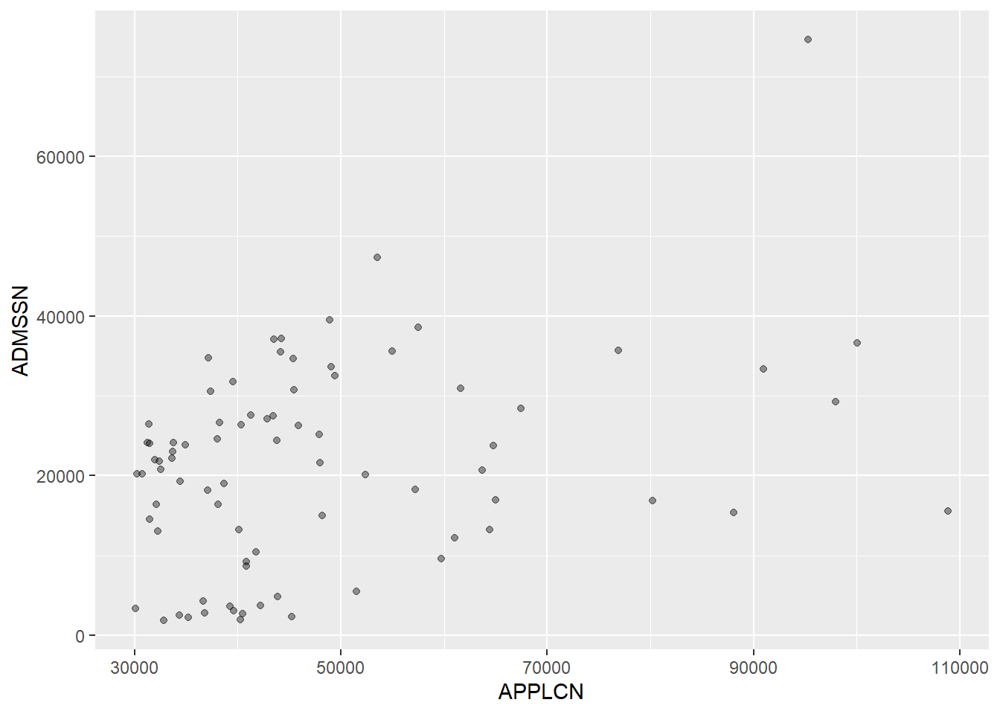
Mapping versus setting
The distinction between mapping and setting is important to understanding ggplot. To see it, we start with a plain plot and add color to it two different ways.
Here is a scatter with no color specified. Every point is ggplot’s default black.
To map an aesthetic means to connect it to a column so it varies with the data. Mapping goes insideaes(). Here we map color to whether an institution requires an admissions test, so the points take on different colors by group and a legend appears to explain them.
ggplot(admissions, aes(x =APPLCN, y =ADMSSN, color =adm_tscores))+geom_point(alpha =0.4)
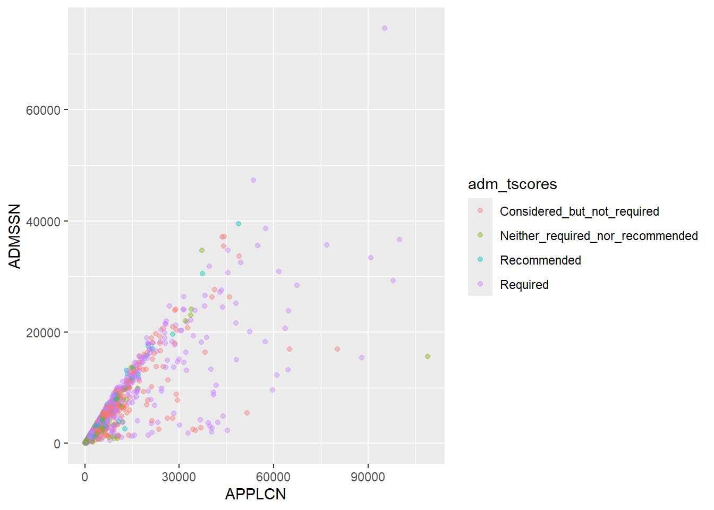
The color now carries information, showing a third variable on top of the two on the axes. ggplot chose the colors and built the legend for us because we mapped color to a column.
Setting a constant color
To set an aesthetic means to fix it to one value that is the same for every point. Setting goes outsideaes(), as an argument to the geom. Here every point is the same blue, and no legend appears because the color carries no information about the data.
ggplot(admissions, aes(x =APPLCN, y =ADMSSN))+geom_point(alpha =0.4, color ="#799BA6")
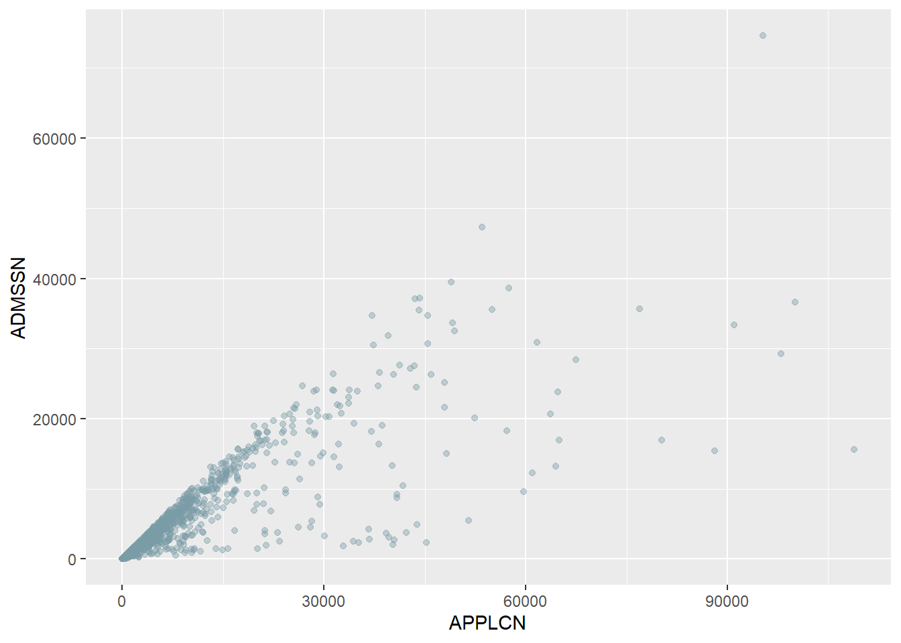
In summary, if a visual property should change with the data, map it inside aes(). If it should be constant, set it outside aes() in the geom.
One related trap is worth seeing. If you put a constant insideaes(), it does not do what you might expect.
The points did not turn blue. Because color = "blue" sits inside aes(), ggplot treated the word “blue” as a category to map, gave it its own color, and added a legend labeled “blue”. This is the classic sign that a constant ended up inside aes() by mistake.
Global and local aesthetics
There is one more piece to where aes() goes. Aesthetics can live in two places, and the location decides which geoms they affect.
Global
An aesthetic placed inside ggplot() is global. Every geom in the plot inherits it. Here both the points and the smooth trend line are colored by group, because color is mapped globally.
An aesthetic placed inside a single geom is local. Only that geom uses it. Here color is mapped only inside geom_point(), so the points are colored by group but the single smooth line is not, because it did not inherit the color mapping.
The difference is visible in the trend lines. Global color gives one line per group, while local color leaves a single line over all the data. Deciding whether an aesthetic is global or local is how you control which parts of a plot respond to it.
Building up a richer plot
So far we have mapped a single variable to color and seen how mapping and setting differ. From here we add more to a plot a piece at a time. Each addition is another layer joined with +. We will keep working with the admissions data and grow one plot as we go, so you can see each layer’s effect on its own.
Adding a shape dimension
Color is one aesthetic, and a plot can map more than one at a time. Shape is another. It draws each group’s points with a different symbol, such as circles, triangles, and squares. Mapping shape works just like mapping color, inside aes().
Here we map both color and shape to the same variable, the admissions test policy. Each group now differs in two ways at once, which can make groups easier to tell apart, and it helps a reader who cannot rely on color alone.
ggplot(admissions, aes(x =APPLCN, y =ADMSSN, color =adm_tscores, shape =adm_tscores))+geom_point(alpha =0.5)
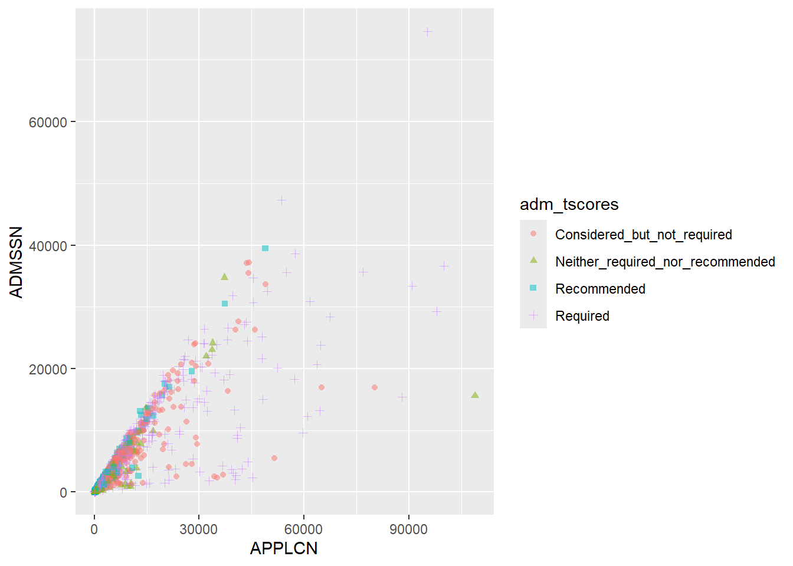
The legend now shows both a color and a symbol for each group, since both aesthetics carry the same information.
Shape can also carry a different variable than color, letting one plot show more of the data at once. This is powerful, but it comes with a caution. The more a plot tries to show, the harder it can be to read. Being able to add another aesthetic does not always mean we should.
ggplot(admissions, aes(x =APPLCN, y =ADMSSN, color =adm_tscores, shape =hs_gpa))+geom_point(alpha =0.5)
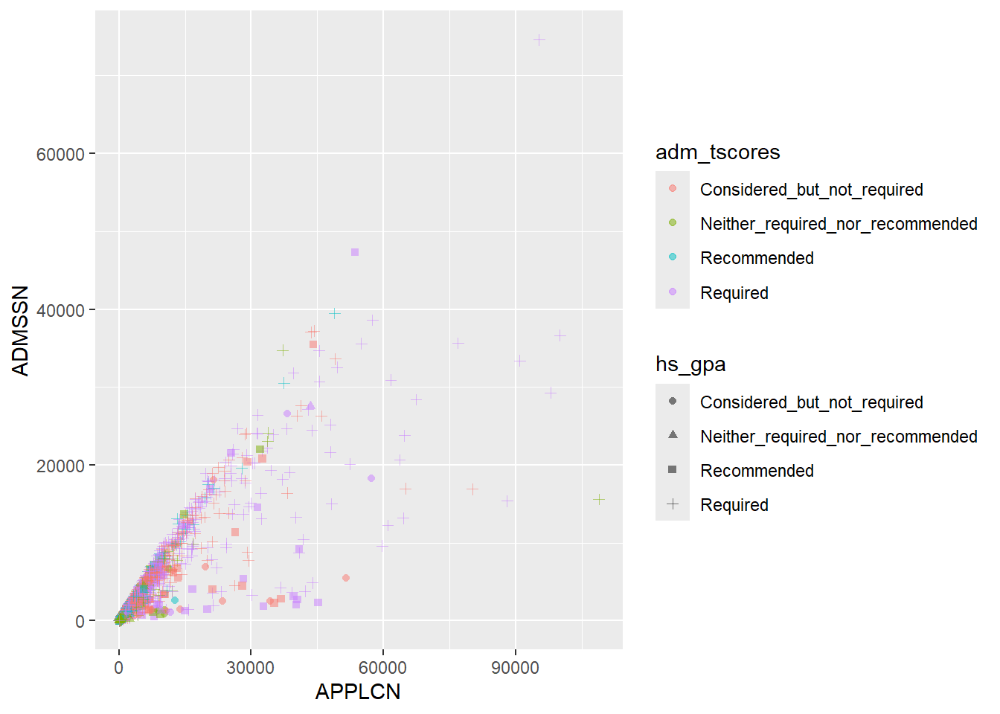
Here color shows the test policy and shape shows the high-school-GPA policy, so the plot carries four variables at once: two on the axes and two in the aesthetics. That is a lot to take in. A plot like this can be worth the density when a reader needs all of it, but often a cleaner plot that shows less communicates more.
Zooming in on a range
Sometimes the interesting data sits in one part of the plot. Zooming into a a range can be helpful to examine and highlight them. There are two ways to zoom in ggplot2, and they behave differently in a way worth understanding.
Approach 1: coord_cartesian() for true zoom
coord_cartesian() sets the viewing window without changing the data. Points outside the window are simply off screen, but they are still there and still used in any calculation. This is a ‘true zoom’, like moving a magnifying glass over the plot.
ggplot(admissions, aes(x =APPLCN, y =ADMSSN, color =adm_tscores, shape =adm_tscores))+geom_point(alpha =0.6)+coord_cartesian(xlim =c(0, 25), ylim =c(0, 25))
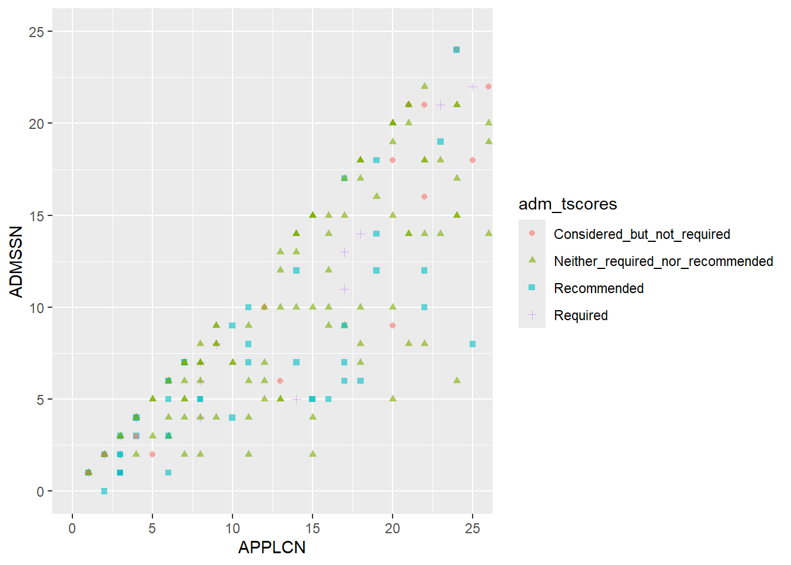
Now the crowded region opens up. With fewer points overlapping, the colors and shapes do some explanatory work.This view sits at the very base of the full plot, the corner of the smallest institutions, where both applications and admissions are low. These are the many small schools that were packed into the bottom-left corner and invisible before we zoomed in.
Approach 2: scale limits, which drop data
Setting limits through the scales, with xlim() or scale_x_continuous(limits = ...), looks similar but does something different. It removes any data outside the limits before the plot is drawn. The points beyond the range are not hidden, they are dropped, and anything computed from the data is recomputed on only what remains.
ggplot(admissions, aes(x =APPLCN, y =ADMSSN, color =adm_tscores, shape =adm_tscores))+geom_point(alpha =0.6)+geom_smooth(aes(group =1), se =FALSE, color ="#C7522A")+xlim(0, 25)+ylim(0, 25)
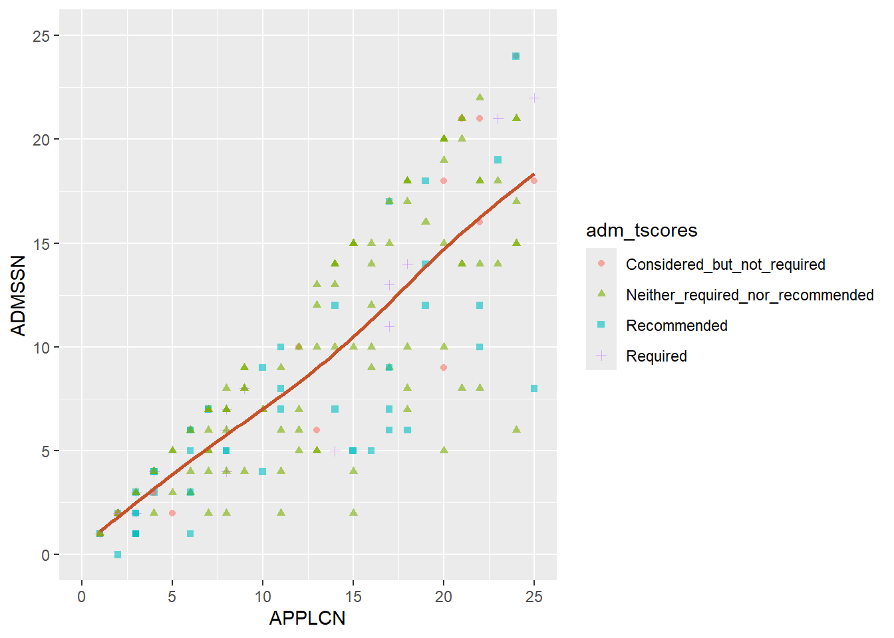
Here we added a trend line to make the difference visible. Because the large institutions were removed before the line was fit, this line describes only the smaller institutions in the range, not the full dataset. You may also see a warning that rows were removed, which is ggplot telling you that data was dropped.
Which to use
The two look alike but answer different questions. Use coord_cartesian() when you want to look closely at part of the data while keeping every point and every calculation intact. Use scale limits when you genuinely want to exclude the data.
Labeling the plot
So far the plot uses the raw column names for its axes, like APPLCN and ADMSSN, which a reader outside the data may not understand. The labs() layer sets readable labels for axis titles, plot titles, and captions. A useful habit is to put the plot’s main takeaway in the subtitle, so a reader gets the point that you are trying to make.
ggplot(admissions, aes(x =APPLCN, y =ADMSSN, color =adm_tscores, shape =adm_tscores))+geom_point(alpha =0.6)+coord_cartesian(xlim =c(0, 25), ylim =c(0, 25))+labs( title ="Applications and admissions at the smallest institutions", subtitle ="The smallest schools typically do not require or recommend admissions tests", x ="Applications received", y ="Students admitted", color ="Test policy", shape ="Test policy")
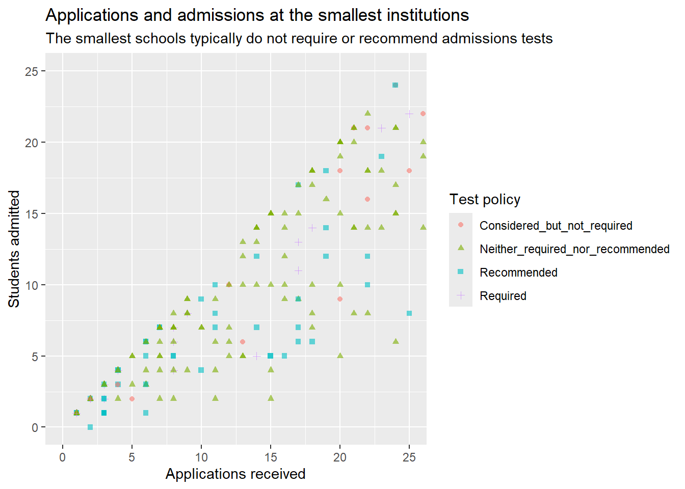
The axes now read plainly, the title says what the plot is about, and the subtitle states the takeaway. Setting both color and shape labels to the same text also cleans up the legend, giving it one clear heading instead of the column name.
Cleaning up the look with a theme
The default gray panel background is fine for quick looks, but a white background often reads better in a report. A theme controls the overall look of the plot: the background, the gridlines, the fonts. ggplot2 comes with several ready-made themes, and theme_minimal() gives a clean white background with light gridlines.
ggplot(admissions, aes(x =APPLCN, y =ADMSSN, color =adm_tscores, shape =adm_tscores))+geom_point()+coord_cartesian(xlim =c(0, 25), ylim =c(0, 25))+labs( title ="Applications and admissions at the smallest institutions", subtitle ="The smallest schools typically do not require or recommend admissions tests", x ="Applications received", y ="Students admitted", color ="Test policy", shape ="Test policy")+theme_minimal()
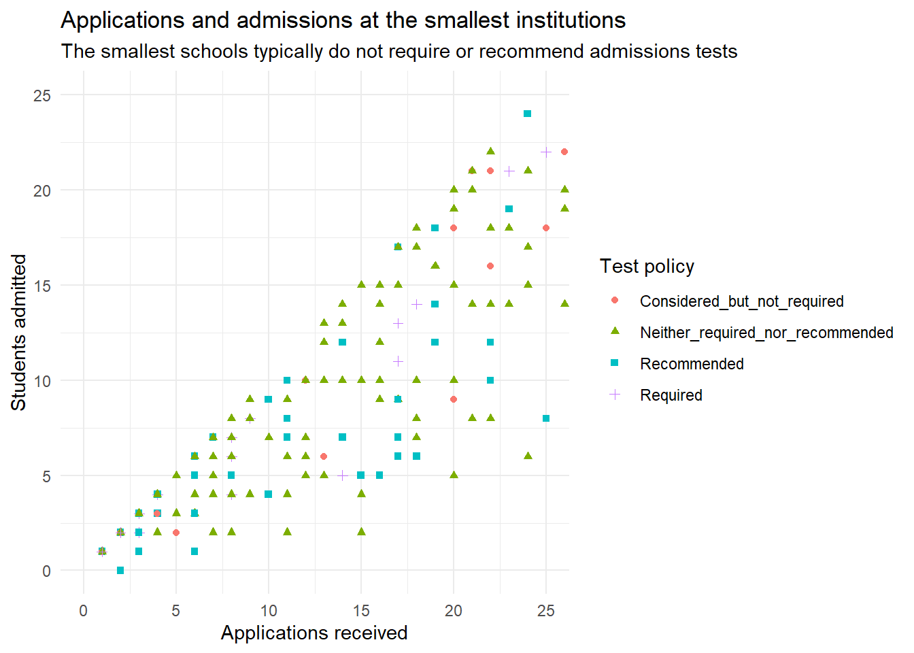
The gray panel is gone, replaced by a clean white background that puts the focus on the points. This is the same plot as before, just easier to read, and it is starting to look like something you could drop into a report.
Adjusting size and text
Two things can still be improved. The points are small, which makes the shapes hard to tell apart, and the default text is a little small for a report. We can fix both.
Point size is set in the geom, outside aes(), because we want every point the same larger size. We add size = 2.5 to geom_point().
Text sizes are controlled in the theme() layer. While theme_minimal() sets the overall look, theme() lets us adjust individual pieces, such as the size of the title, the axis labels, and the axis numbers. We add a theme() after theme_minimal() so our changes build on top of it.
ggplot(admissions, aes(x =APPLCN, y =ADMSSN, color =adm_tscores, shape =adm_tscores))+geom_point(alpha =0.7, size =3.5)+coord_cartesian(xlim =c(0, 25), ylim =c(0, 25))+labs( title ="Applications and admissions at the smallest institutions", subtitle ="The smallest schools typically do not require or recommend admissions tests", x ="Applications received", y ="Students admitted", color ="Test policy", shape ="Test policy")+theme_minimal()+theme( plot.title =element_text(size =16, face ="bold"), plot.subtitle =element_text(size =12), axis.title =element_text(size =12), axis.text =element_text(size =10))
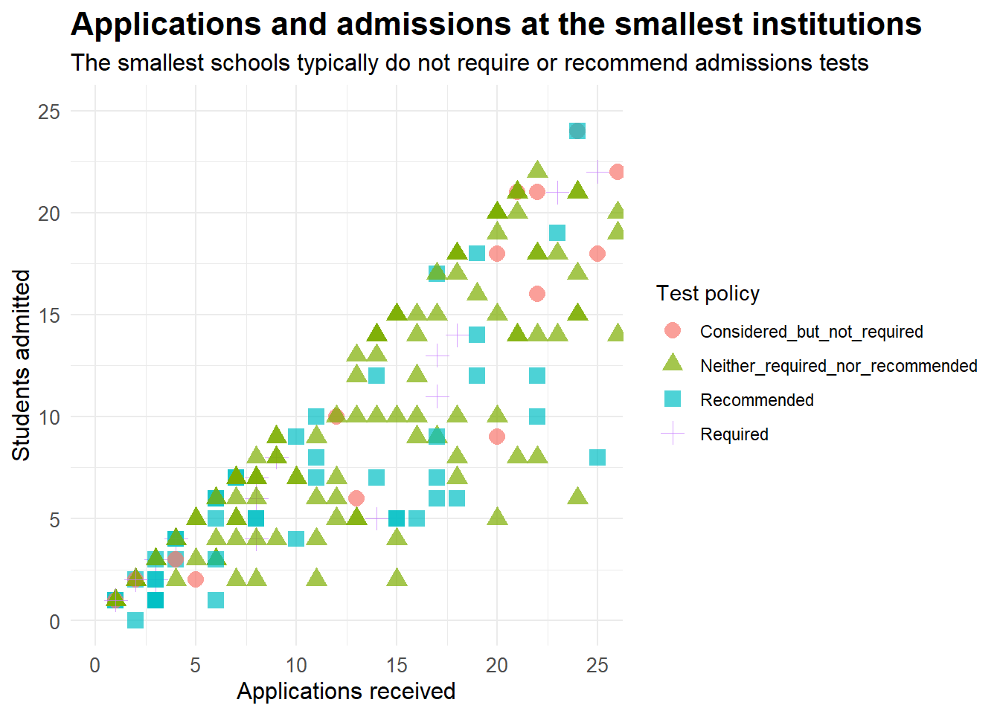
The larger points make the shapes easy to distinguish, and the text sizes are more legible for a report or presentation. Notice the syntax inside theme() where each element of the plot has a name, such as plot.title or axis.text, and we adjust it with element_text(), which controls text properties like size and boldness. This is how ggplot2 gives fine control over nearly every part of a plot’s appearance.See ggplot2 documentation to see the dozens of customizations available: https://ggplot2.tidyverse.org/reference/theme.html.
Mapping size to a variable
In the last plot we set size to a constant, making every point the same. We can also map size to a variable, so each point’s size reflects a value in the data. Like color, mapping size goes inside aes(). This adds another dimension where a point’s position shows two variables, and its size shows a third. Here we map both size and color to full-time enrollment, and zoom the axes to the smallest schools.
ggplot(admissions, aes(x =APPLCN, y =ADMSSN, size =FT_enroll, color =FT_enroll))+geom_point(alpha =0.4)+xlim(0, 100)+ylim(0, 100)+labs( title ="Applications, admissions, and enrollment size", subtitle ="Point size and color show full-time enrollment", x ="Applications received", y ="Students admitted", size ="Full-time enrollment", color ="Full-time enrollment")+theme_minimal()
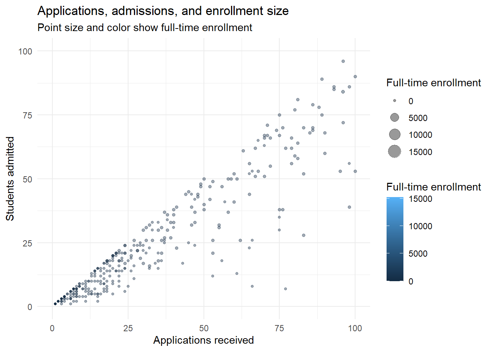
There is a problem though where the points are nearly all small and dark, and it is hard to see any difference among them. The reason is that the size and color scales were built from the entire dataset, including the very large universities with tens of thousands of students. Against that range, every school in this zoomed-in corner counts as small, so they all land at the bottom of both scales. Zooming the axes narrowed the view, but it did not change the scales, which still stretch to fit the largest schools in the whole country.
To fix this, we recalibrate the scales to a smaller range with limits. Setting the size and color scales to span, say, zero to one thousand students means the variation among these small schools now uses the full range of sizes and colors. Schools above one thousand simply sit at the top of the scale.
ggplot(admissions, aes(x =APPLCN, y =ADMSSN, size =FT_enroll, color =FT_enroll))+geom_point(alpha =0.4)+scale_size_continuous(limits =c(0, 50))+scale_color_continuous(limits =c(0, 50))+xlim(0, 100)+ylim(0, 100)+labs( title ="Applications, admissions, and enrollment size", subtitle ="Scales recalibrated to the range of these smaller schools", x ="Applications received", y ="Students admitted", size ="Full-time enrollment", color ="Full-time enrollment")+theme_minimal()
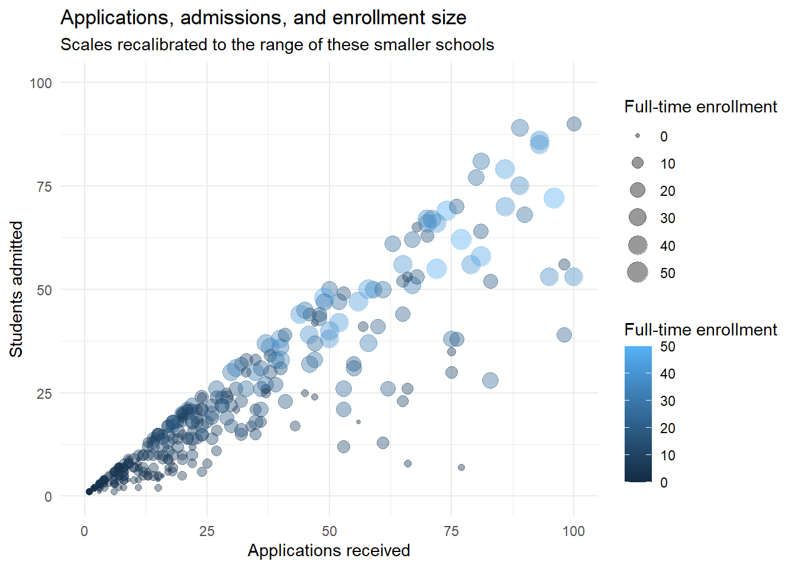
Now the differences among these small schools are visible. The larger and lighter points have more students, the smaller and darker ones have fewer, and the pattern reads clearly because the scales fit the schools actually in view. Remember that the axes and the size and color scales are set separately. Narrowing the axes does not narrow the scales, and to make size and color respond to a subset of the data, we adjust the scales themselves.
Controlling the colors
So far ggplot2 has chosen the colors for us. Often that is fine, but sometimes we want to control that. For example, to use a colorblind-safe palette, to match a brand, or to pick colors that read well together. Color is set through a scale, and the scale for a mapped color aesthetic is one of the scale_color_*() functions.
Ready-made palettes
The simplest control is to swap in a prebuilt palette. The viridis palettes are a popular choice because they are designed to be readable by people with color vision differences and to print well in grayscale. For a categorical variable like our test policy, we use scale_color_brewer() with the Set1 pallete. You can see the palettes here https://ggplot2.tidyverse.org/reference/scale_brewer.html#palettes.
ggplot(admissions, aes(x =APPLCN, y =ADMSSN, color =adm_tscores, shape =adm_tscores))+geom_point(alpha =0.7, size =3.5)+coord_cartesian(xlim =c(0, 25), ylim =c(0, 25))+labs( title ="Applications and admissions at the smallest institutions", subtitle ="The smallest schools typically do not require or recommend admissions tests", x ="Applications received", y ="Students admitted", color ="Test policy", shape ="Test policy")+scale_color_brewer(palette ="Set1")+theme_minimal()
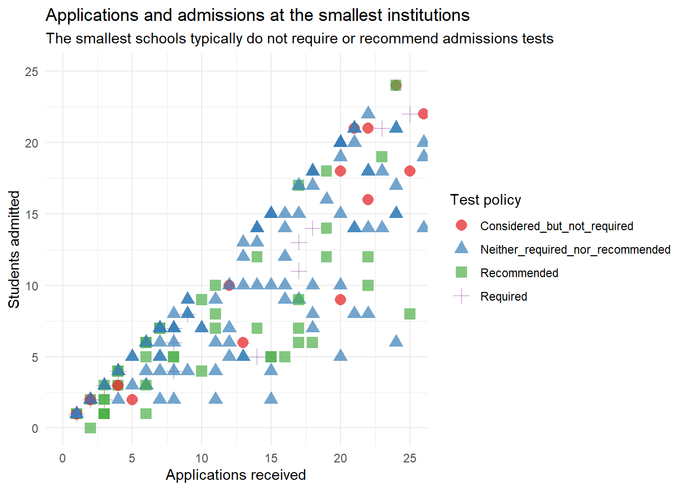
Setting each color by hand
When you want exact control, scale_color_manual() lets you assign a specific color to each group. You give it a set of values, one per group. Here we choose colors ourselves, including our site’s slate and rust, so the plot matches the look we want.
ggplot(admissions, aes(x =APPLCN, y =ADMSSN, color =adm_tscores, shape =adm_tscores))+geom_point(alpha =0.7, size =3.5)+coord_cartesian(xlim =c(0, 25), ylim =c(0, 25))+labs( title ="Applications and admissions at the smallest institutions", subtitle ="The smallest schools typically do not require or recommend admissions tests", x ="Applications received", y ="Students admitted", color ="Test policy", shape ="Test policy")+scale_color_manual( values =c("Considered_but_not_required"="#C7522A","Neither_required_nor_recommended"="#799BA6","Recommended"="#6A8D73","Required"="#4A4A4A"))+theme_minimal()
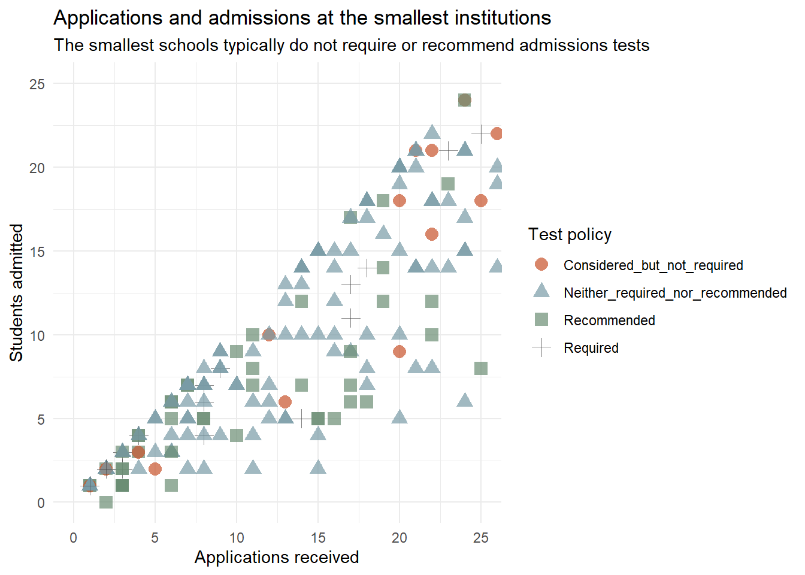
Marking a value on the plot
Beyond styling, we can put information directly on a plot to guide the reader such as lines marking a threshold or an average, and text labels explaining it. We build on the same plot, adding a reference line and an annotation.
A reference line
geom_hline() draws a horizontal line at a value we give it, and geom_vline() draws a vertical one. They are useful for marking a cutoff or an average. Here we compute the average admissions among these small institutions and draw a line at it in our orange accent color. This lets a reader see at a glance which schools sit above and below the average.
We first filtered to the small institutions and stored them in small_schools, then computed the mean of their admissions as mean_admit and passed it to geom_hline(). The line comes straight from the data, so it stays correct if the data changes.
This occurs because coord_cartesian() leaves the entire dataset intact and only zooms in on a bit. These calculations ensure we aren’t accounting for all schools when only the smallest ones are of interest in this moment.
small_schools<-admissions|>filter(APPLCN<=25, ADMSSN<=25)mean_admit<-mean(small_schools$ADMSSN, na.rm =TRUE)ggplot(small_schools, aes(x =APPLCN, y =ADMSSN, color =adm_tscores, shape =adm_tscores))+geom_point(alpha =0.7, size =3.5)+geom_hline(yintercept =mean_admit, color ="#C7522A", linewidth =1)+labs( title ="Applications and admissions at the smallest institutions", subtitle ="The orange line marks the average number of admissions", x ="Applications received", y ="Students admitted", color ="Test policy", shape ="Test policy")+scale_color_manual( values =c("Considered_but_not_required"="#C7522A","Neither_required_nor_recommended"="#799BA6","Recommended"="#6A8D73","Required"="#4A4A4A"))+theme_minimal()
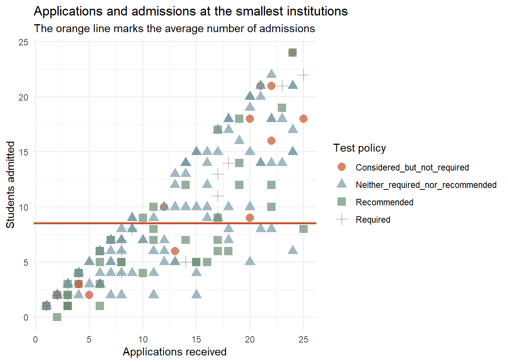
Adding a text label
A line shows where a value sits, but a label can say what it is. annotate() places text at coordinates we choose. Here we label the line so its meaning is clear on the plot itself.
ggplot(small_schools, aes(x =APPLCN, y =ADMSSN, color =adm_tscores, shape =adm_tscores))+geom_point(alpha =0.7, size =3.5)+geom_hline(yintercept =mean_admit, color ="#C7522A", linewidth =1)+annotate("text", x =5, y =mean_admit+1.5, label =paste("Average:", round(mean_admit, 1)), color ="#C7522A", fontface ="bold")+labs( title ="The smallest schools typically do not require or recommend admissions tests", x ="Applications received", y ="Students admitted", color ="Test policy", shape ="Test policy")+scale_color_manual( values =c("Considered_but_not_required"="#C7522A","Neither_required_nor_recommended"="#799BA6","Recommended"="#6A8D73","Required"="#4A4A4A"))+theme_minimal()
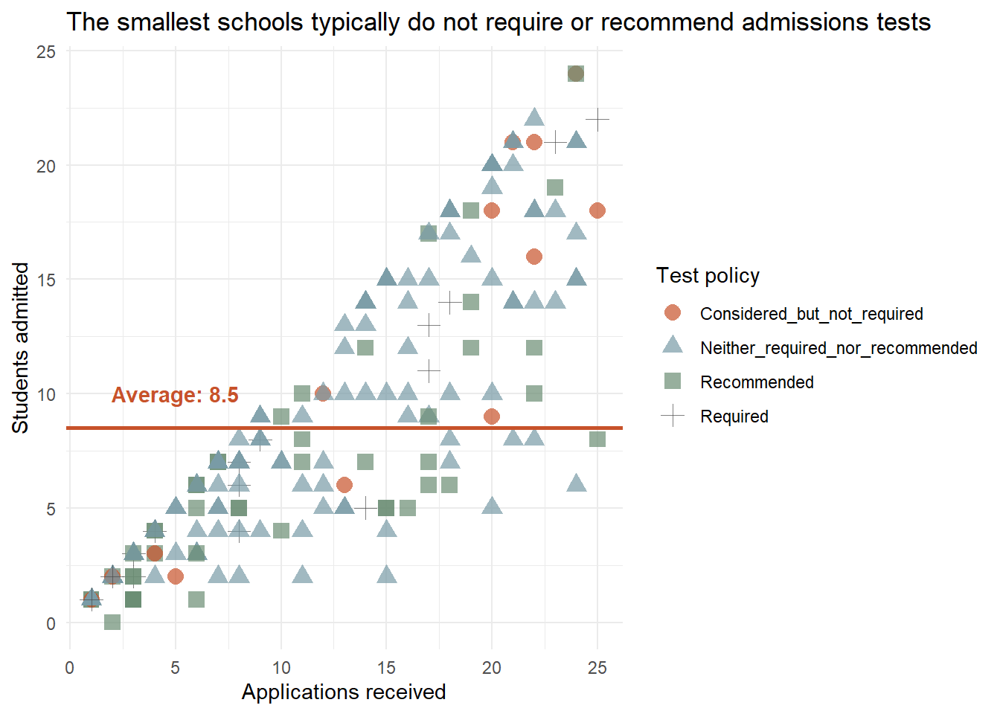
Highlighting a region with a shaded box
Text and lines mark single points and values. Sometimes we want to draw attention to a whole region of the plot instead. annotate() can add a shaded rectangle with "rect", and we pair it with a text label to explain what the region shows. Here we highlight the corner where schools have both high applications and high admissions for this group, the more selective-looking upper right.
ggplot(small_schools, aes(x =APPLCN, y =ADMSSN, color =adm_tscores, shape =adm_tscores))+annotate("rect", xmin =18, xmax =26, ymin =15, ymax =26, fill ="#C7522A", alpha =0.12)+annotate("text", x =22, y =24, label ="Higher volume", color ="#C7522A", fontface ="bold")+geom_point(alpha =0.7, size =3)+scale_color_manual( values =c("Considered_but_not_required"="#C7522A","Neither_required_nor_recommended"="#799BA6","Recommended"="#6A8D73","Required"="#4A4A4A"))+labs( title ="Applications and admissions at the smallest institutions", subtitle ="The shaded box highlights schools with the most applications and admissions", x ="Applications received", y ="Students admitted", color ="Test policy", shape ="Test policy")+theme_minimal()+theme(legend.position ="none")
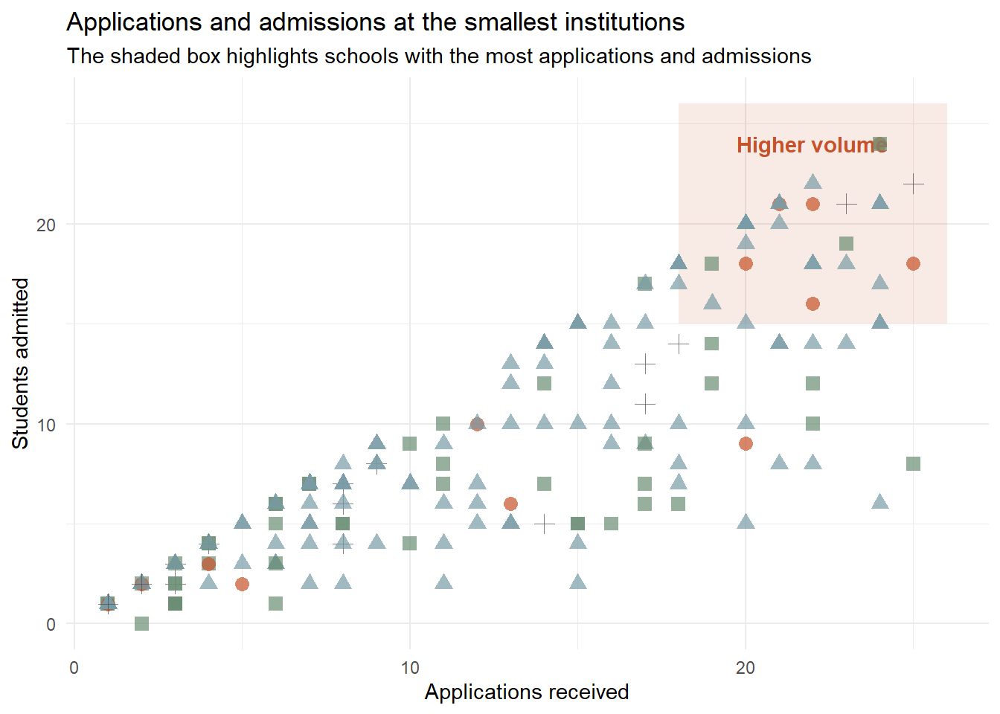
The shaded box calls out a region without hiding the points inside it, because we gave the rectangle a low alpha, making it faintly transparent. Two things are worth noticing. First, annotate("rect", ...) takes a range on each axis, xmin and xmax, ymin and ymax, which define the corners of the box. Second, we placed the annotate() layers beforegeom_point(), so the box is drawn first and the points sit on top of it.
Small multiples with facets
Our plot has been showing all four test-policy groups on one set of axes, differntiated by color and shape. When groups overlap heavily, another approach is to give each one its own small panel. This is called faceting, and it produces a set of small plots that are repeated once per group, side by side.
facet_wrap() splits the plot by a variable. We give it the variable to split on, written with a ~ in front, and ggplot draws one panel per value.
ggplot(small_schools, aes(x =APPLCN, y =ADMSSN))+geom_point(alpha =0.7, size =2.5, color ="#799BA6")+facet_wrap(~adm_tscores)+labs( title ="Applications and admissions, one panel per test policy", x ="Applications received", y ="Students admitted")+theme_minimal()
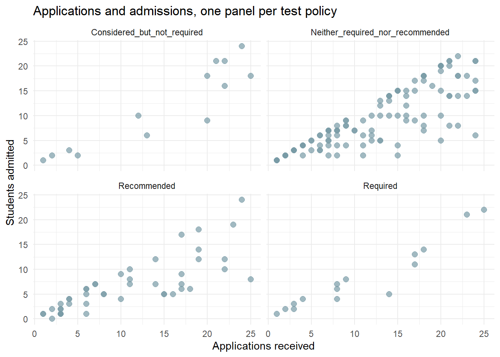
Each policy now has its own panel, which makes it easy to compare the groups without them overlapping. Because we split by policy, we no longer need to map color to it. This plot uses a single color and lets the panels do the separating.
Faceting and the reference line combine well. When we add the average line, geom_hline() draws it in every panel, so each group can be read against the same overall average.
ggplot(small_schools, aes(x =APPLCN, y =ADMSSN))+geom_point(alpha =0.7, size =2.5, color ="#799BA6")+geom_hline(yintercept =mean_admit, color ="#C7522A", linewidth =1, alpha =0.6)+facet_wrap(~adm_tscores)+labs( title ="Admissions by test policy, against the overall average", subtitle ="The orange line marks the average admissions across all these schools", x ="Applications received", y ="Students admitted")+theme_minimal()
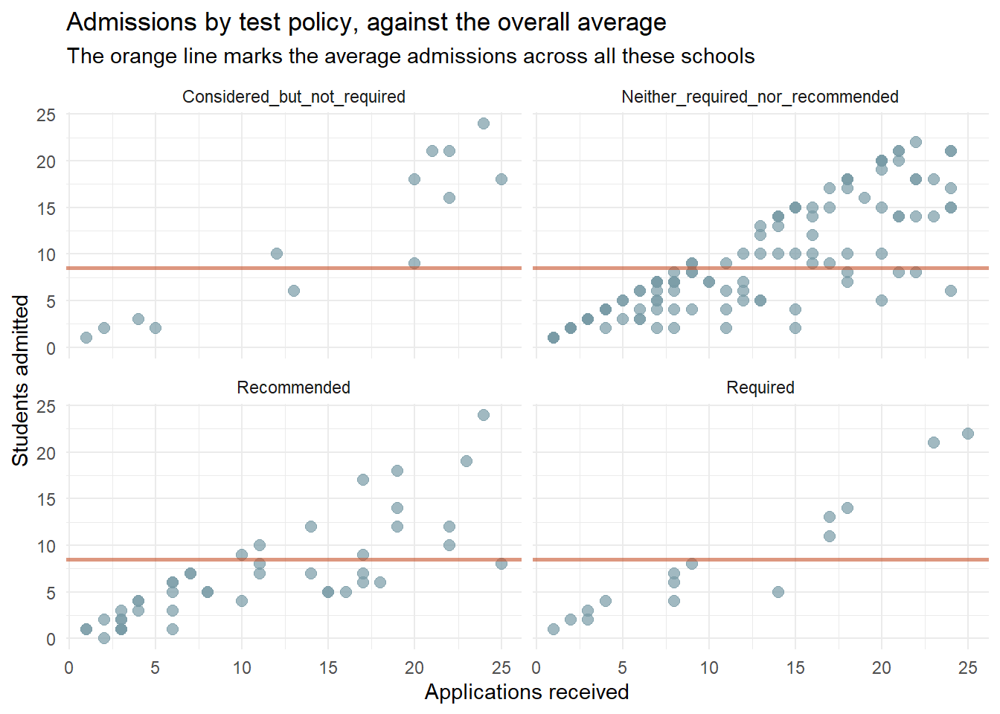
Faceting on two variables
facet_wrap() splits by one variable. To split by two at once, facet_grid() lays out a grid: one variable’s categories down the rows and another’s across the columns. This lets us see how two groupings interact.
Here we cross test policy with a second grouping we build ourselves about whether a school’s full-time enrollment is majority female. We create that category first with mutate(), then grid the two variables. In facet_grid(), the ~ separates rows from columns. We shorten variable names so they render legibly on the plot. We use filter to remove any institutions with missing enrollment data so we don’t have an NA column.
small_schools|>filter(!is.na(FT_enroll), !is.na(FT_enroll_W), FT_enroll>0)|>mutate( majority_female =ifelse(FT_enroll_W/FT_enroll>0.5, ">50% F", "<=50% F"), policy =recode(adm_tscores,"Required"="Required","Recommended"="Recommended","Considered_but_not_required"="Considered","Neither_required_nor_recommended"="Neither"))|>ggplot(aes(x =APPLCN, y =ADMSSN, color =policy))+geom_point(alpha =0.7, size =2)+facet_grid(policy~majority_female)+scale_color_manual( values =c("Considered"="#C7522A","Neither"="#799BA6","Recommended"="#6A8D73","Required"="#4A4A4A"))+labs( title ="Admissions by test policy and female enrollment", x ="Applications received", y ="Students admitted")+theme_minimal()+theme(legend.position ="none")
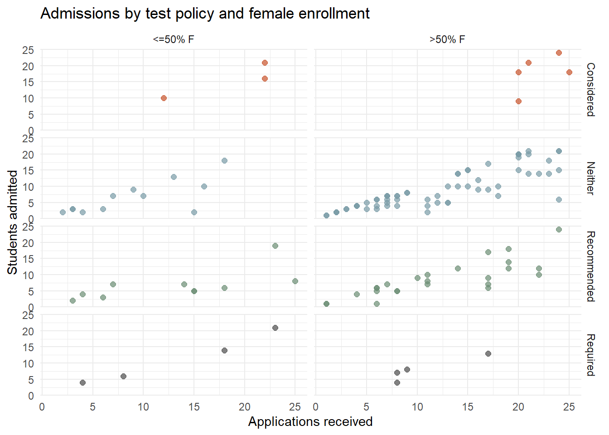
Each cell is one combination corresponding with a test policy (row) and whether the school is majority female (column). Reading across a row shows how one policy’s schools split by enrollment makeup, and reading down a column shows how the majority-female and majority-male schools differ across policies. Sparse cells may be informative too, telling us that combination is uncommon among these small institutions.
The techniques work on any plot
This module has focused on the scatter plot, but most of what we have covered applies to other plot types also. To show this, here is a finished box plot that pulls together many of the pieces including a different geom, color from our palette, a reference line, clear labels with a takeaway subtitle, and a clean theme. A box plot compares a numeric variable across groups, so here we compare admissions across the test-policy groups. Keep in mind too that there are many other settings beyond what we have covered and you can see the documentation mentioned at the start of the chapter to get a sense of the possibilities.
# The overall average admissions, for a reference lineoverall_mean<-mean(admissions$ADMSSN, na.rm =TRUE)admissions|>filter(!is.na(adm_tscores))|>ggplot(aes(x =adm_tscores, y =ADMSSN, fill =adm_tscores))+geom_hline(yintercept =overall_mean, color ="#C7522A", linewidth =1, linetype ="dashed")+geom_boxplot(alpha =0.8, outlier.alpha =0.2)+scale_fill_manual( values =c("Considered_but_not_required"="#C7522A","Neither_required_nor_recommended"="#799BA6","Recommended"="#6A8D73","Required"="#4A4A4A"))+coord_flip(ylim =c(0, 15000))+labs( title ="Admissions by admissions-test policy", subtitle ="Schools that require a test tend to admit more students than those that do not", x =NULL, y ="Students admitted", caption ="Dashed line marks the overall average. Source: IPEDS, 2020.")+theme_minimal()+theme( legend.position ="none", plot.title =element_text(size =15, face ="bold"), plot.subtitle =element_text(size =11))
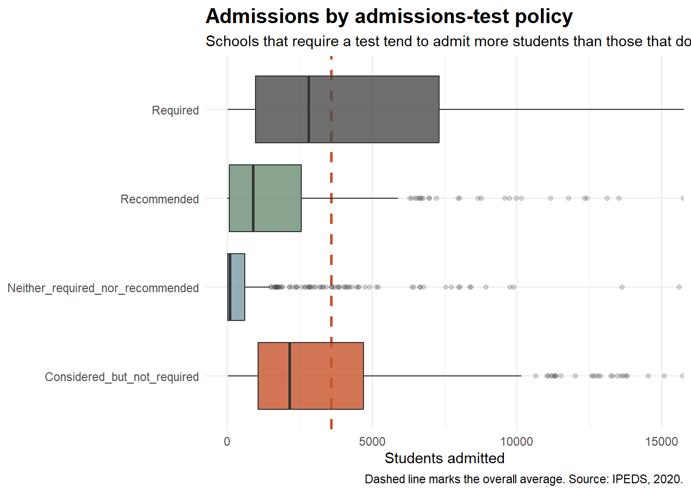
Stats behind the geoms
Every geom quietly runs a statistical transformation on your data before it draws anything. This transformation is called a stat. Some geoms do very little, such as geom_point(), which plots each value where it sits. Others do real computation. A bar chart made with geom_bar() counts how many rows fall in each category and draws bars of those counts, even though you never asked it to count. That counting is the stat at work.
We can see this by making a bar chart of the test-policy groups. We never compute the counts ourselves. The geom’s default stat does it for us.
The height of each bar is a count that the default stat calculated. Sometimes, though, you already have the numbers you want to plot and do not want the geom to count anything. In that case you change the stat. Setting stat = "identity" tells the geom to use the values as they are, drawing bars at the heights you provide rather than counting rows. Here we summarize the average admissions per group first, then plot those averages directly.
admissions|>filter(!is.na(adm_tscores))|>group_by(adm_tscores)|>summarize(avg_admit =mean(ADMSSN, na.rm =TRUE))|>ggplot(aes(x =adm_tscores, y =avg_admit))+geom_bar(stat ="identity", fill ="#799BA6")+coord_flip()+labs(title ="Average admissions by test policy", x =NULL, y ="Average students admitted")+theme_minimal()
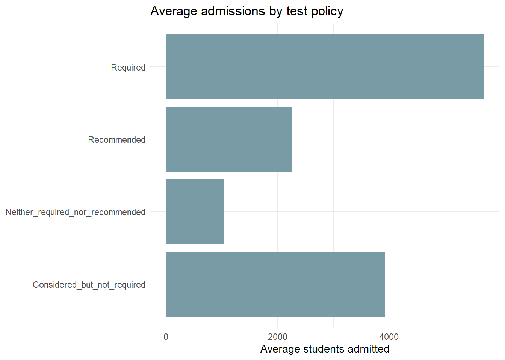
The first chart let the geom count for us with its default stat. The second turned that counting off with stat = "identity" so it would draw the averages we had already calculated. Understanding that a geom carries a stat, and that the stat can be changed, explains why some plots seem to compute values on their own and how to take that control back when you need it.
Some geoms and their stats
Each geom runs a default stat, and that stat can be changed when you need different behavior. Here are a few common geoms, what each computes by default, and a change that can be useful. Keep in mind there are more stats and changes that can be made to them beyond what is seen here.
Uses the identity stat, which computes nothing and plots each value where it sits. It may not need its stat changed often, since points are meant to show the raw data.
Uses the count stat, which counts how many rows fall in each category and draws bars of those counts. Change it to stat = "identity" when you have already calculated the values and want the bars drawn at heights you supply.
Uses the bin stat, which groups values into ranges and counts how many fall in each. Change the number of bins with the bins argument when the default grouping is too coarse or too fine to see the shape.
Uses the boxplot stat, which computes the median, the quartiles, and the outliers. It is usually left as is, though you can add a separate layer to also mark the mean, since a box plot shows the median by default.
Uses the smooth stat, which fits a trend line through the points. Change the method with method = "lm" to fit a straight line instead of the default curve, which is useful when you expect a linear relationship.
AI Connection
TipLeveraging AI
Visualization has a lot of moving parts, with geoms, aesthetics, scales, facets, themes and more. AI can help you scaffold both the data and visual sides of a plot when you are not sure how to proceed. Describe the dataset and plot you want in plain language and ask for the ggplot2 code, or paste a plot that is not working and ask what to change. Pair this with the documentation and the resources from earlier modules. Remember to read, interpret, comment and probe what the AI gives you so you understand each layer. Always push back on complexity and opacity requesting alternative paths
Module Exercises
NoteExercises
Explore and customize a plot. Pick a dataset from the IPEDS package that we have not used here (see the options with data(package = "IPEDS"), for example fall_enroll2020 or complete2020). Load it and use it to build and refine one plot of your own.
Choose two variables that are interesting to explore their relationship and make a first plot with a geom that fits them. Map a third variable to color or another aesthetic, and describe what the plot shows.
Refine the plot for a reader. Add clear labels and a subtitle that states your takeaway, apply a theme, and adjust colors, sizes, or scales so the plot communicates well.
Add one element that draws attention to something specific, such as a reference line, an annotation, or facets that split the plot by a group. Explain what it helps a reader notice. See documentation for possibilities.
Compare groups with a different plot type. Using an IPEDS dataset, build a plot that compares a numeric variable across categories, such as a box plot or a bar chart.
Pick a categorical variable and a numeric variable, then make a box plot or bar chart comparing the numeric values across the categories. Describe what the comparison reveals.
Add a computed value to the plot, such as a line marking the overall average or bars showing a group summary you calculated with group_by() and summarize(). Note what it adds.
Finish the plot for presentation. Handle issues like long category labels so they stay readable, apply your colors and a theme, and write a title and subtitle that state the finding. What would you highlight if this were going in a report?